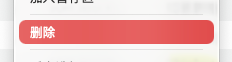

删除

功能概述
删除功能用于移除废弃或不需要的本地化条目。为了最大程度防止误删和数据丢失,TransX
采用了"软删除"机制:删除的条目不会立即从文件中永久移除,而是先移动到回收区（类似操作系统的回收站）,在回收区中可以随时恢复,只有主动清空回收区后才会真正删除。这种双重保护机制确保了本地化数据的安全性,特别适合团队协作环境。
软删除机制
工作流程
- 标记删除：在主列表中选中条目并执行删除操作
- 移入回收区：条目从主列表消失，转移到回收区
- 保持数据：条目的所有数据（Key、翻译、注释等）完整保留在回收区
- 可以恢复：在回收区中可以随时将条目恢复到原位置
- 永久删除：清空回收区后，条目才会从文件中真正删除
安全保障
- 误删保护：所有删除操作都可以撤销（在清空回收区前）
- 数据完整：删除的条目保留所有语言的翻译和元数据
- 恢复简单：一键即可从回收区恢复条目
- 团队友好：避免因误删导致团队成员的工作丢失
操作步骤
删除条目
- 选择条目：在内容列表中选中需要删除的条目
- 执行删除：右键选择"删除"或使用快捷键
Delete
- 确认操作：在确认对话框中点击确定（批量删除时）
- 查看结果：条目从主列表消失，移至回收区
恢复删除的条目
- 进入回收区：在导航区找到"回收区"项并点击
- 选择条目：在回收区中找到需要恢复的条目
- 执行恢复：右键选择"恢复"菜单项
- 验证结果：条目重新出现在主列表的原分组中
永久删除
清空整个回收区：
- 进入回收区视图
- 点击"清空回收区"按钮
- 确认操作（不可逆）
- 所有回收区内容被永久删除
永久删除选定条目：
- 在回收区中选中特定条目
- 右键选择"永久删除"
- 确认操作
- 只有选中的条目被永久删除
使用场景
场景 1：清理废弃功能的文案
移除了某个功能模块后，将相关本地化条目删除到回收区，测试确认无问题后再永久删除。
场景 2：修正重复条目
发现重复的 Key
后，删除重复项到回收区，验证保留的条目正确后清空回收区。
场景 3：误删恢复
不小心删除了重要条目，立即从回收区恢复，所有数据完整无损。
场景 4：临时删除测试
删除某些条目测试应用表现，如果效果不理想，从回收区恢复；如果符合预期，再永久删除。
注意事项
- 保存生效：删除操作需要保存文件后才会写入 .strings
文件
- 批量删除风险：批量删除前仔细检查选中的条目
- 代码依赖检查：删除前确认代码中不再使用这些 Key
- 团队协作：删除操作应通知其他团队成员
- 版本控制：删除大量内容前建议先提交当前更改
- 清空不可逆：清空回收区是永久性的，无法通过 TransX
撤销
- 定期清理：回收区内容过多可能影响性能，建议定期清理
- 搜索范围：主列表的搜索不包括回收区内容
删除前的检查清单
代码引用检查
- 使用 Xcode 全局搜索确认代码中不再引用这些 Key
- 检查 Storyboard/XIB 文件
- 确认配置文件和脚本不依赖这些 Key
团队沟通
- 与产品经理确认功能确实已废弃
- 与开发团队确认不再使用
- 在团队文档中记录删除决策
最佳实践
渐进式删除策略
阶段一：标记为废弃（添加 [Deprecated]
注释）
阶段二：软删除（移至回收区）
阶段三：永久删除（清空回收区）
定期清理策略
- 每个迭代结束：检查并删除废弃内容
- 每月一次：清空回收区
- 每个大版本：全面审计并清理
回收区管理
定期清理：
- 每周或每月检查回收区
- 确认哪些可以永久删除
- 保留最近删除的内容以防万一
导出备份：
在清空回收区前，导出回收区内容作为归档备份。
与版本控制的配合
Git 工作流
- 删除条目（移至回收区）并保存
- 提交到
Git：
git commit -m "Move deprecated items to trash"
- 如果需要恢复，可以通过回收区或 Git 历史
回退策略
- 还在回收区：直接恢复
- 已清空但未提交：重新打开文件
- 已提交到 Git：使用
git revert
或从历史中恢复